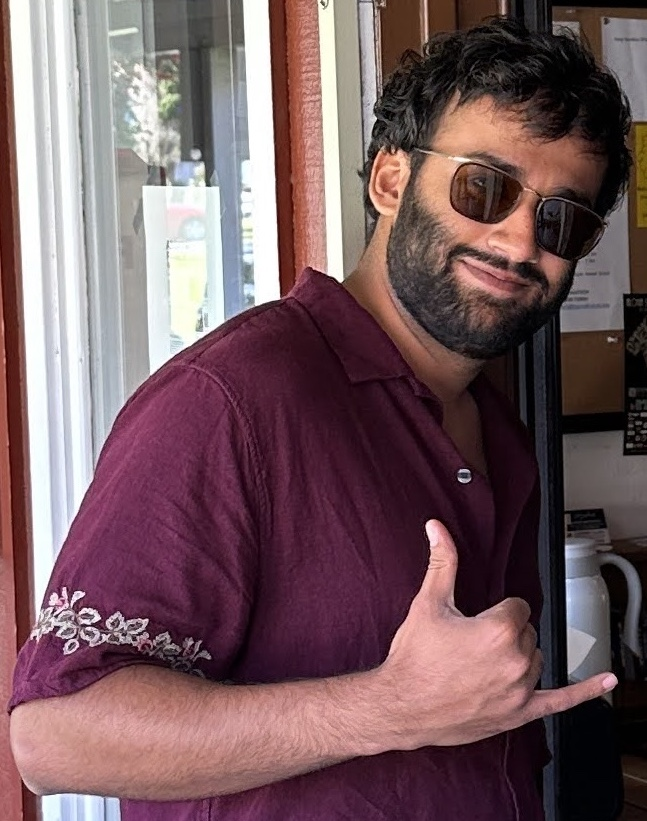
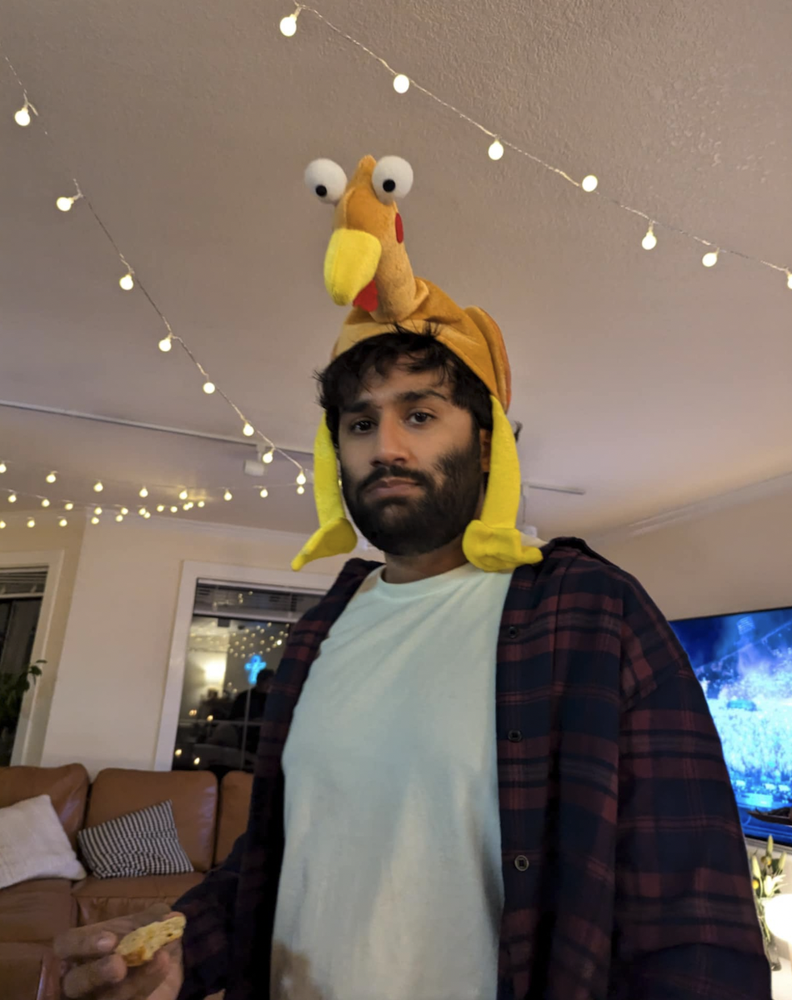

Hi, I'm Amber Sahdev, and I'm probably building something.
Some recent things:
Edge
- QA for Voice Agents
Redial
- Voice AI Infrastructure
Open Interface
-
Nudge
- 14k+ notifications sent
Wheredle
- 500k+ users, 6mil+ times played,
PC Gamer Article
Here's my
resume
.
(Reach out to me about roles in Robotics or ML)
Find me on
LinkedIn
or
Twitter
.
Get notified about my next project, maybe, probably: